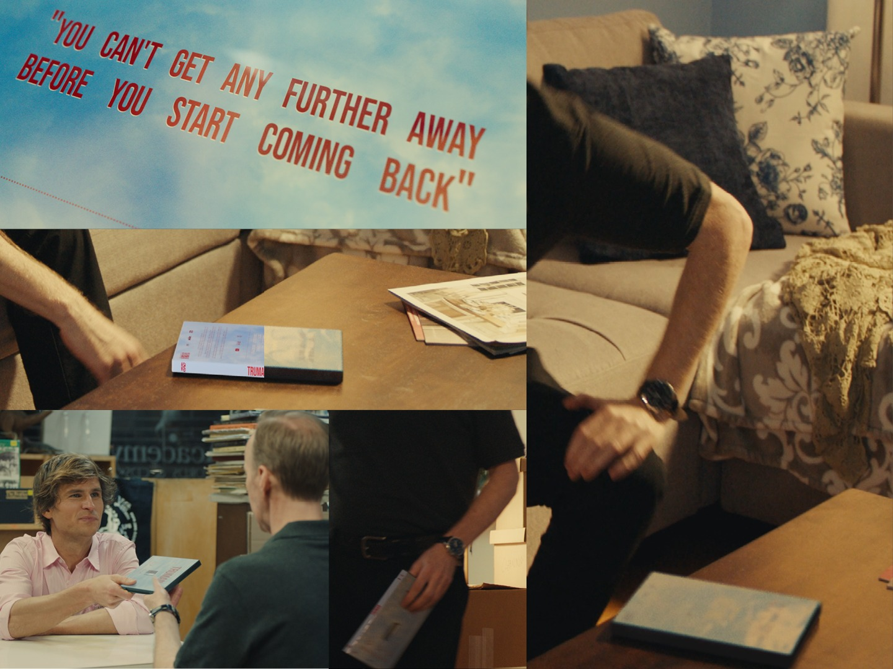

PROJET 07 / 07
Pochette DVD
Projet réalisé pour un court métrage de fin d’études de la NYU
Création complète d’une pochette DVD, de son design graphique à son intégration en 3D.
J’ai réalisé la modélisation, le texturing, le matchmove de caméra, le lighting et le rendu, puis le compositing final pour intégrer l’objet de manière réaliste dans le plan.
Découvrir les autres projets →